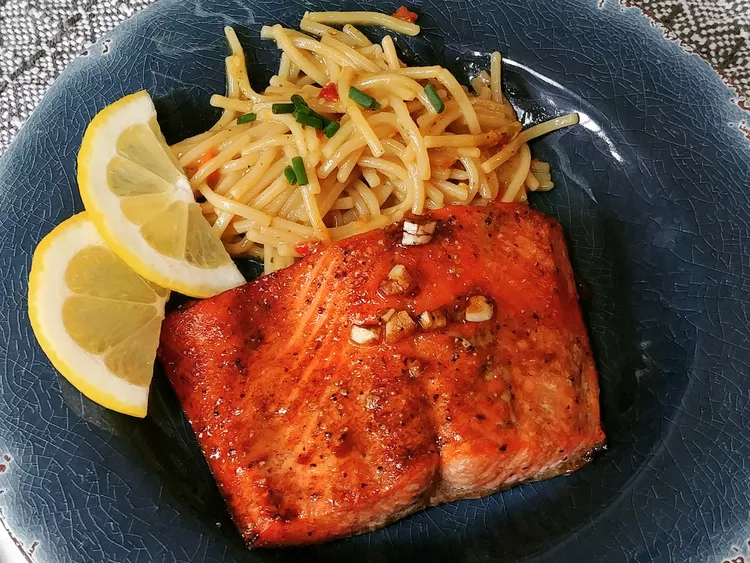

Delicious Salmon

Description
This salmon recipe is so easy, you won't believe how delicious it is! A simple marinade
made with soy sauce, brown sugar, and garlic adds so much flavor. It's quick to cook under
the broiler for a sensational salmon dinner.
Ingredients
- 1/3 cup soy sauce
- 1/4 cup olive oil
- 1/4 cup brown sugar
- 2 teaspoons lemon pepper
- 2 cloves garlic, minced
- 1 pound skin-on salmon fillet
Steps
- Whisk soy sauce, olive oil, brown sugar, lemon pepper, and garlic together in a shallow
dish; lay salmon fillets skin-side up in the marinade; marinate in the refrigerator 4
to 8 hours or overnight.
- Preheat the oven's broiler and set the oven rack about 6 inches from the heat source.
Transfer salmon fillets from marinade onto a baking sheet. Discard any remaining
marinade.
- Cook salmon under the broiler until lightly browned and the flesh flakes easily with a
fork, 7 to 10 minutes. Allow salmon to rest for a few minutes before slicing and serving.
Home